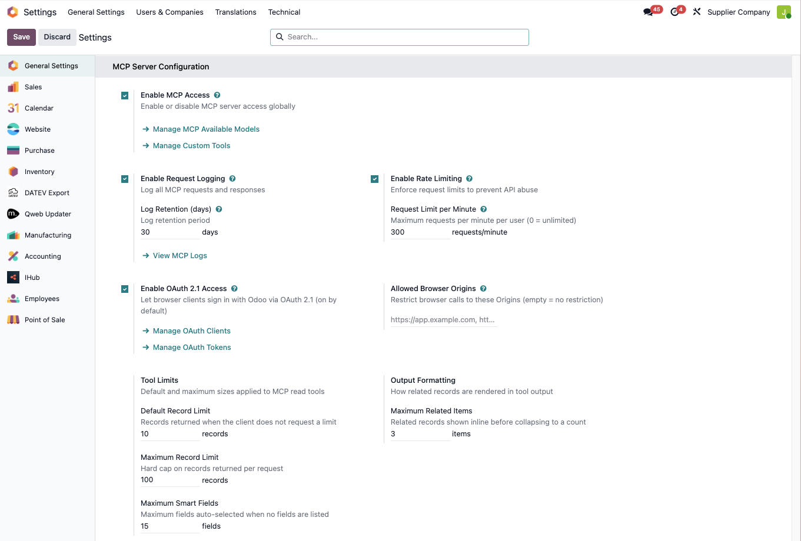
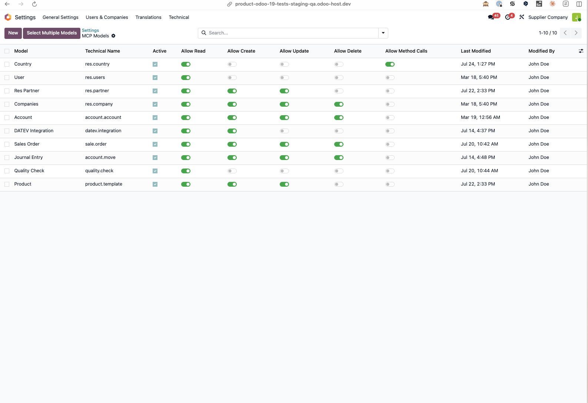

Connect AI Assistants to Your Odoo Data with MCP Server
Enable natural language to search, create, update, and manage your Odoo records.
Built-in MCP endpoint with OAuth login — works with Claude, ChatGPT, Microsoft Copilot, Cursor, VS Code, and more.
MCP Server for Odoo seamlessly connects any AI assistant that supports the Model Context Protocol to your Odoo instance, giving you the power to search, create, update, and manage records using natural language — all through a secure, standards-based integration. Odoo itself speaks MCP: assistants like Claude, ChatGPT, Microsoft Copilot, Perplexity, Cursor, VS Code, etc. connect directly to your Odoo URL — users simply log in with their Odoo account, and every call runs under their real permissions, fully audited.

What is Model Context Protocol (MCP)?
Model Context Protocol (MCP) is an open standard developed by Anthropic that enables seamless integration between AI assistants and data sources. It provides a universal way for AI systems to securely access and interact with local and remote resources while maintaining user control and privacy. One integration, every MCP-compatible AI tool.
Universal Compatibility
One integration works with ALL AI assistants that support MCP - no need for multiple custom integrations or proprietary connectors.
Secure by Design
Built-in security with OAuth 2.1 or API-key authentication, granular per-model permissions, rate limiting, and a complete audit trail.
Future-Proof
As new AI tools emerge, they'll support MCP - your Odoo integration automatically works with them. No vendor lock-in, ever.
Key Features & Benefits
Instant AI Integration
Connect any MCP-compatible AI assistant to your Odoo data without complex API development. Odoo itself speaks MCP at /mcp — no middleware or separate server process to run.
Natural Language Operations
Not just queries - create, update, and delete records naturally. Ask "Create a new customer for Acme Corp" or "Update John Doe's phone number" and watch it happen instantly.
Empower Your Team
Let employees use their preferred AI tools to access Odoo data naturally and efficiently - no retraining required.
Log in with Odoo (OAuth 2.1)
Users connect Claude.ai, ChatGPT or Le Chat by signing in with their own Odoo account and approving a consent screen. Tokens are short-lived and revocable; admins see and manage every client and session.
Read-Only Consent
One checkbox at the consent screen grants an assistant read-only access: write tools are not even listed for that session, and any write attempt is refused. Ideal for connecting AI to production safely.
Secure & Controlled Access
Granular per-model, per-operation permissions on top of Odoo's own access rights. "MCP only" API keys confine a key to the MCP endpoint. Every call, denial and login attempt lands in the audit log.
Custom Tools
Expose curated verbs like confirm_sale_order backed by Odoo server actions — instead of enabling generic write access. Each tool has its own schema, access groups, and read-only flag.
Easy Configuration
Set up in minutes through Odoo's standard settings interface. No technical expertise required - just point, click, and configure.
No Vendor Lock-in
Switch between AI providers anytime - your MCP integration continues to work seamlessly with any future MCP-compatible tool.
Go beyond simple queries. Create, Read, Update, and Delete operations for any enabled model - all through natural language.
➕ Create
🔍 Read
✏️ Update
🗑️ Delete
Three Ways to Connect
1. Log in with Odoo Recommended
The module is a complete OAuth 2.1 authorization server. Paste your Odoo URL into the AI client, sign in with your normal Odoo login, approve the consent screen — done. No keys created, copied, or stored.
2. API Key (Bearer)
For headless setups, service accounts and CI: mint a key once and set an Authorization: Bearer header. Choose the "MCP only" scope so a leaked key cannot be used for general RPC access.
3. Local Bridge
For stdio-only MCP clients: the companion open-source mcp-server-odoo client (uvx) runs locally and bridges to the same module APIs — same permissions, same audit log.
Works with ANY MCP-Compatible AI Assistant
The beauty of open standards - one integration, endless possibilities. Cloud assistants (Claude.ai, ChatGPT, Perplexity, Mistral Le Chat, Microsoft Copilot, etc.) connect with an OAuth login; local tools (Claude Code, Cursor, VS Code, Gemini CLI, etc.) can use OAuth or an API key. View the growing list of compatible clients at modelcontextprotocol.io/clients.
Popular MCP Clients Include:
Claude
Web, Desktop, Mobile & Claude Code
ChatGPT
Custom apps with OAuth login
Microsoft Copilot
M365 Copilot & Copilot Studio
Cursor
AI-first code editor
And Many More...
💬 Chat assistants: ChatGPT (custom apps, OAuth login), Claude.ai web & mobile, Perplexity, Mistral Le Chat, LibreChat, Cherry Studio, etc.
🏢 Enterprise platforms: Microsoft 365 Copilot & Copilot Studio, Gemini Enterprise, etc.
🤖 Coding agents & CLIs: Claude Code, Codex CLI, Gemini CLI, Goose, Cline, etc.
💻 IDEs & editors: VS Code (Copilot agent mode), Windsurf, Zed, Continue.dev, Roo Code, Kilo Code, etc.
🧩 Frameworks & custom solutions: Chainlit, LangChain, any tool built with the MCP SDK
The MCP ecosystem now spans 500+ clients and is growing rapidly - new clients are added every week.
Feature Details
Dive deeper into the technical capabilities that make MCP Server for Odoo so powerful and flexible.


Full CRUD Through Natural Language
Complete data management through conversation, with the same ease as asking questions. 12 built-in tools cover the full lifecycle.
- Create: Add new records to any enabled model - customers, products, orders, tasks, and more
- Read: Search, filter, aggregate, and retrieve records with complex criteria expressed in plain English
- Update: Modify individual fields or update records based on conditions
- Delete: Remove records with full respect for Odoo's referential integrity rules
- Beyond CRUD: post chatter messages, inspect model fields, call whitelisted business methods (admin opt-in), and fetch binaries/attachments on demand
- Per-model toggles: Enable each operation independently for each exposed model
Enterprise-Grade Security
Security-first design with controls at every layer of the integration. Every call runs as a real Odoo user - never elevated.
- Log in with Odoo (OAuth 2.1): Built-in authorization server with dynamic client registration, PKCE, per-request consent, and one-click revocation of any client or session
- Read-only consent: Users can grant an assistant read-only access with one checkbox - enforced server-side per tool call (
mcp:read/mcp:writescopes) - Hardened tokens: Opaque access tokens stored hashed, short-lived, with rotating refresh tokens and reuse detection
- "MCP only" API keys: Keys confined to the MCP endpoint - a leaked key cannot be used for general RPC access
- Model whitelist: Explicitly enable each model - default-deny posture protects unconfigured data
- Audit logging: Every call, permission denial, and authentication attempt recorded for monitoring and compliance
- Sanitized errors: Clients never see tracebacks, SQL, or internal details
Granular Permission System
Control exactly what each AI assistant can do, down to the model and operation level - always on top of Odoo's own access rights and record rules.
- Per-user opt-in: MCP is off for everyone by default - only members of the "MCP User" security group can connect, whichever credential they use
- Model-level permissions: Choose which Odoo models AI can access - res.partner, sale.order, account.move, or any custom model
- Operation-level permissions: Independently enable Create, Read, Update, and Delete per model
- Method calls (opt-in): Optionally allow whitelisted public business methods per model - off by default
- Read-only sessions: OAuth consent can pin a whole session to read-only, regardless of model settings
- User-level enforcement: Every call runs as the authenticated user - Odoo ACLs and record rules always apply
- Familiar interface: All managed through standard Odoo settings - no separate admin tools
Custom Tools from Server Actions
Curated verbs beat generic CRUD: expose exactly the business operations you want AI to perform, wrapped as first-class MCP tools.
- Server-action backed: Wrap an Odoo Python server action as a tool like
confirm_sale_order- no module development needed - Own contract: Each tool has a name, an LLM-facing description, and a JSON input schema advertised to clients
- Runs as the caller: The action executes under the calling user's real permissions - a custom tool never grants elevated rights
- Access-gated: Who may call a tool is controlled by the action's Allowed Groups; unauthorized users don't even see it listed
- Independent of model flags: A custom tool is bounded by its action's logic and the caller's permissions, not by a model's Allow Read/Create/Write/Delete toggles - scope each action narrowly
- Read-only flag: Mark a tool read-only to make it callable in read-only OAuth sessions
- Safe by default: Failures roll back the whole call, errors are sanitized, and every execution is audited
Connectivity & Protocols
Flexible connectivity options to fit any deployment scenario.
- Native MCP endpoint: Streamable HTTP (JSON-RPC 2.0) at
/mcp- protocol revisions 2025-11-25 and 2025-06-18, negotiated at handshake - OAuth 2.1 discovery: Standard
/.well-knownmetadata (RFC 9728 / RFC 8414) plus dynamic client registration (RFC 7591) - clients configure themselves - MCP resources: Binaries and attachments served on demand via
odoo://URIs instead of inline base64 - REST API endpoints: Health check, model listing, and key validation for custom integrations
- XML-RPC endpoints: MCP-gated XML-RPC used by the companion stdio bridge (
uvx mcp-server-odoo) for stdio-only clients
Built for Real LLM Workflows
Responses are shaped for language models - compact, relevant, and predictable.
- Smart field selection: Automatically picks the most relevant fields per model when the client doesn't specify any - compact output, fewer tokens
- User context on connect: The handshake hands the assistant the connected user, timezone, and company scope - fewer wrong guesses, fewer wrong writes
- Pagination & limits: Configurable default and maximum record limits keep responses inside context windows
- On-demand binaries: Images and attachments are fetched via resources only when needed - no base64 bloat in every response
- Rate limiting: Built-in per-user protection prevents runaway AI agents from overwhelming the server
Simple Setup Process
From installation to your first AI-powered Odoo query in minutes - no keys to copy with the OAuth flow.
Install Module
Install MCP Server in your Odoo instance like any other module.
Enable Models
Turn on the MCP switch, choose which models to expose, and add your users to the "MCP User" group.
Add URL to Your AI Client
Paste https://your-odoo.com/mcp as a connector in Claude, ChatGPT, Cursor, VS Code...
Log in & Approve
Sign in with your Odoo login and approve the consent screen - optionally read-only. Done.
Prefer static credentials? Mint an "MCP only" API key from your Odoo profile and use it as a Bearer header instead.
Use Cases & Examples
Customer Service Acceleration
Scenario: Support agents need instant access to customer data while on calls
With MCP Server, support teams can ask their AI assistant to:
- "Look up all orders for customer X in the last 6 months"
- "Create a new support ticket for this complaint"
- "Update the customer's preferred contact method to email"
- "Show me unresolved tickets assigned to my team"
- "Add a note about the resolution to this customer's record"
Business Impact: Agents handle calls without switching screens, reducing call times and improving customer satisfaction scores.
Sales Intelligence on Demand
Scenario: Sales reps need to manage their CRM during prospect research and outreach
Sales teams can interact with their pipeline conversationally:
- "Create a lead for Acme Corp with priority high"
- "Update opportunity 'Q3 Enterprise Deal' status to won"
- "Show me all opportunities closing this month"
- "Which deals haven't had activity in 14+ days?"
- "Add a follow-up activity for tomorrow on this lead"
Business Impact: Sales reps spend less time on data entry and more time selling, with cleaner pipeline data as a side effect.
Inventory Management Made Conversational
Scenario: Warehouse managers need quick stock insights and updates
Operations teams can manage inventory through natural language:
- "List products below reorder point"
- "Create a new product variant for Widget Pro in red"
- "Update stock levels for SKU-1234 to 500 units"
- "Show me incoming shipments expected this week"
- "Find products with no movement in the last 90 days"
Business Impact: Faster stock decisions, fewer stockouts, and reduced time spent navigating inventory screens.
Financial Operations Through Chat
Scenario: Finance teams need rapid invoice processing and customer payment insights
Accountants can handle daily finance operations conversationally:
- "Find unpaid invoices from last month over €5,000"
- "Create an invoice for customer X with these line items"
- "Update payment terms on this order to Net 60"
- "Show overdue receivables grouped by customer"
- "List all credit notes issued this quarter"
Business Impact: Month-end close runs faster, dunning workflows become proactive, and AR teams spot issues earlier.
HR Records at Your Fingertips
Scenario: HR teams handle frequent record updates and lookups
HR professionals can manage employee data through conversation:
- "Add new employee John Doe to the Engineering department"
- "Update Sarah Chen's department to Marketing"
- "List employees with upcoming work anniversaries"
- "Show me all open positions in the company"
- "Find employees who haven't completed onboarding"
Business Impact: Reduces administrative overhead for HR staff and surfaces actionable insights from people data.
Project Management Without the Clicks
Scenario: Project managers juggle tasks, milestones, and resource allocation across multiple projects
PMs can drive their projects through natural language:
- "Create a task 'Website redesign kickoff' due next Friday"
- "Update milestone deadline for the Q4 launch to December 15"
- "Show overdue tasks for the Marketing team"
- "List all tasks blocked waiting on the design team"
- "Assign this task to the next available developer"
Business Impact: PMs spend more time managing people and outcomes, less time wrangling tools.
Technical Specifications
Requirements
- Odoo 18.0
- Python packages:
authlib(≥1.6.12, <1.7.0),defusedxml,packaging - Any AI assistant with MCP support
Protocols Supported
- Native MCP at
/mcp- Streamable HTTP, JSON-RPC 2.0 - MCP protocol revisions 2025-11-25 & 2025-06-18
- OAuth 2.1 (RFC 9728 / 8414 / 7591, PKCE S256)
- REST API endpoints
- XML-RPC (used by the stdio bridge client)
Security Features
- OAuth 2.1 browser login with per-request consent
- Read-only consent (
mcp:read/mcp:writescopes) - "MCP only" API keys (endpoint-confined)
- Hashed opaque tokens, rotating refresh + reuse detection
- Per-model whitelist & per-operation permissions
- Complete audit logging, sanitized errors
LLM-Ready by Design
- User/timezone/company context on connect
- Smart field selection & pagination limits
- On-demand binaries via
odoo://resources - Per-user rate limiting
Ready to connect AI to your Odoo data?
Install the module, paste your Odoo URL into your AI assistant, and log in. Experience the future of business data interaction today.
For support or questions, contact much. Consulting.